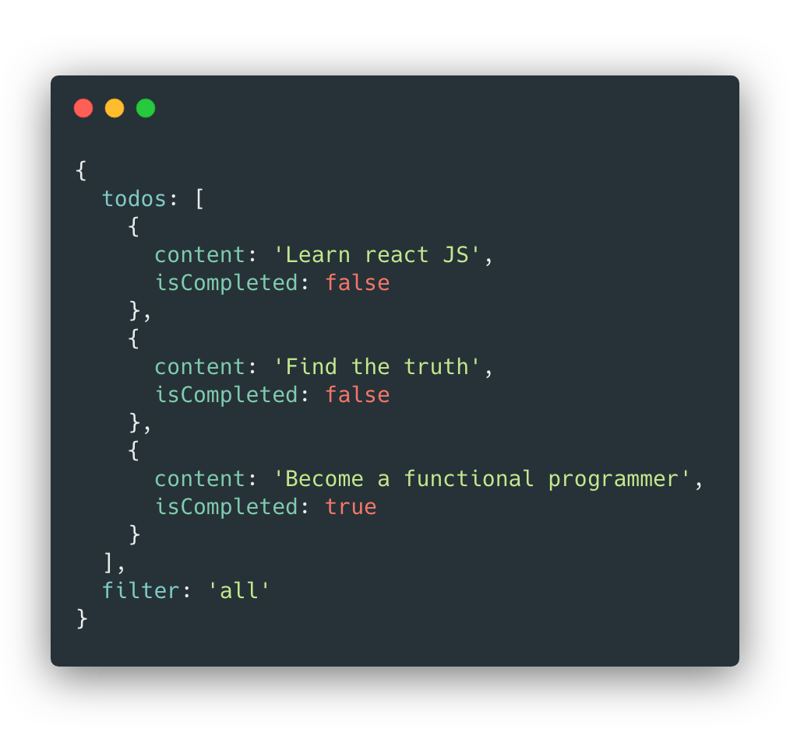
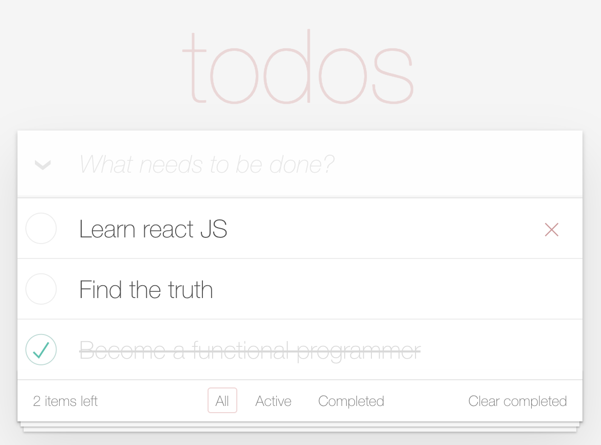
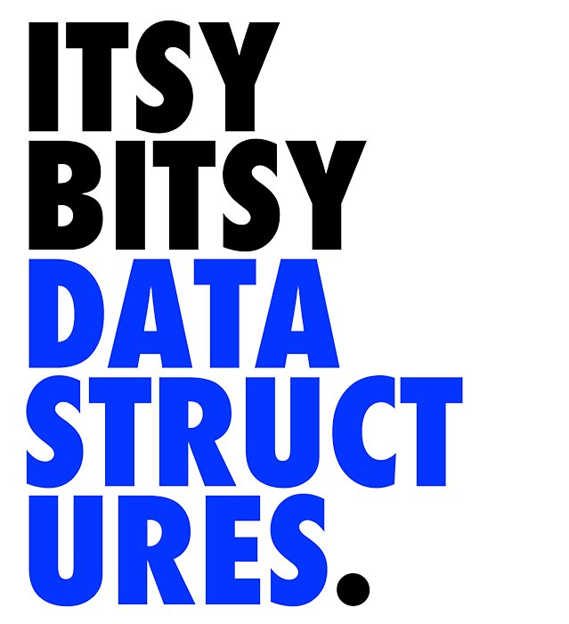

<!DOCTYPE html>
<html lang="en">
  <head>
    <meta charset="utf-8" />
    <meta name="viewport" content="width=device-width, initial-scale=1.0, maximum-scale=1.0, user-scalable=no" />

    <title>reveal-md</title>
    <link rel="stylesheet" href="./css/reveal.css" />
    <link rel="stylesheet" href="./css/theme/solarized.css" id="theme" />
    <link rel="stylesheet" href="./css/highlight/atom-one-dark.css" />
    <link rel="stylesheet" href="./css/print/paper.css" type="text/css" media="print" />

  </head>
  <body>
    <div class="reveal">
      <div class="slides"><section  data-markdown><script type="text/template">## React
### State reducer pattern

<p style="font-size:.7em">Slides: https://gvergnaud.github.io/react-state-reducer</p>

</script></section><section  data-markdown><script type="text/template">
## 👋

**Gabriel Vergnaud**

Héticien de la P2017

<div class="flex">
  <span>Frontend engineer </span>
</div>

<div class="flex">
[@gvergnaud](https://github.com/gvergnaud)<span> on </span>
</div>

<div class="flex">
[@GabrielVergnaud](https://twitter.com/GabrielVergnaud)<span> on </span>
</div>

<aside class="notes"><ul>
<li>Qui suis je ?<ul>
<li>gabriel vergnaud</li>
<li>Heticien P2017</li>
<li>developer à Sketchfab.com (On recrute!)</li>
<li>gvergnaud on github</li>
<li>GabrielVergnaud on twitter</li>
</ul>
</li>
</ul>
</aside></script></section><section  data-markdown><script type="text/template">

## 👀
<p class="fragment">Qui êtes vous ?</p>


<aside class="notes"><ul>
<li>Qui etes vous ?<ul>
<li>Techno utilisée ? </li>
<li>quels projets ?</li>
<li>plutot agence / produits ?</li>
</ul>
</li>
</ul>
</aside></script></section><section  data-markdown><script type="text/template">
## 🗺
<div style="display:flex; flex-direction: column; align-items: flex-start; width: 600px; margin: 0 auto;">
  <div class="flex">
    <h3 style="margin:0; margin-right:10px;">I.</h3>
    recapitulatif sur react
  </div>

  <div class="flex">
    <h3 style="margin:0; margin-right:10px;">II.</h3>
    state reducer pattern
  </div>

  <div class="flex">
    <h3 style="margin:0; margin-right:10px;">III.</h3>
    les side effects
  </div>

  <div class="flex">
    <h3 style="margin:0; margin-right:10px;">exercice.</h3>
    <span> Cloner Notion </span>
  </div>
</div>
</script></section><section  data-markdown><script type="text/template">
# I
petit recapitulatif sur **React** ...
</script></section><section  data-markdown><script type="text/template">
<h2 class="white">Un arbre</h2>
<h6 class="white lower">(de composants)</h6>

<!-- .slide: data-background="resources/tree.jpeg" -->
</script></section><section  data-markdown><script type="text/template">


<p class="fragment">Chaque composant peut contenir un **state**</p>

<aside class="notes"><ul>
<li><p>Recap sur react</p>
<ul>
<li><p>une application react est un arbre de composants</p>
<pre><code>  Component
   /      \
 /          \
</code></pre><p>Component     Component
  /                \
/                    \
Component              Component</p>
</li>
</ul>
</li>
</ul>
</aside></script></section><section  data-markdown><script type="text/template">
### le state
<p class="fragment">la **data** qui défini l'interface</p>
<p class="fragment">Quand le state **update**, l'interface **update**</p>

<aside class="notes"><ul>
<li>Chaque component contiens un state<ul>
<li>Le state est de la data qu&#39;il peut muter au cours du temps</li>
<li>L&#39;UI est défini par le state (view = f(state))</li>
</ul>
</li>
</ul>
</aside></script></section><section  data-markdown><script type="text/template"><div class="flex">
  
  
</div>
</script></section><section  data-markdown><script type="text/template">
`view = f(state)`

plus besoin d'update la view.

Il suffit d'update le state
</script></section><section  data-markdown><script type="text/template">
### Data flow

<p class="fragment">En react le data flow est **unidirectionnel**</p>

<p class="fragment">composant **parent** → composants **enfants**</p>

<p class="fragment">data **down**, events **up**</p>

<aside class="notes"><ul>
<li>Contrairement a d&#39;autres framework ou les enfant peuvent directement updater leurs parents,
en react le data flow est <strong>unidirectionnel</strong>. Il se dirige toujours du parent vers les enfants<ul>
<li>a chaque fois qu&#39;un component update son state, tous les components enfants sont re-render
pour updater le DOM</li>
<li>Les props d&#39;un component enfant est (presque) toujours le state d&#39;un component parent.</li>
</ul>
</li>
</ul>
</aside></script></section><section  data-markdown><script type="text/template">
<p class="white fragment">Cool.</p>
<!-- .slide: data-background="https://media.giphy.com/media/GCvktC0KFy9l6/giphy.gif" -->
</script></section><section  data-markdown><script type="text/template">
Vous connaissez **useState()**

```jsx
function Counter() {
  const [count, setCount] = React.useState(0)

  return (
    <div>
      <p>{count}</p>
      <button onClick={() => setCount(x => x + 1)}>+</button>
    </div>
  )
}
```
<p class="fragment">C'est pratique</p>

<aside class="notes"><ul>
<li>Vous avez appris <code>useState()</code> qui permet de déclarer un state updatable</li>
</ul>
</aside></script></section><section  data-markdown><script type="text/template">
Mais ça a des limitations
</script></section><section  data-markdown><script type="text/template">

```js
const [isOpen, setIsOpen] = React.useState(false)
const [search, setSearch] = React.useState('')
const [sortBy, setSortBy] = React.useState('createdAt')
const [category, setCategory] = React.useState('all')
const [date, setDate] = React.useState('31')
// ...

const reset = () => {
  setIsOpen(false)
  setSearch('')
  setSortBy('createdAt')
  setCategory('all')
  setDate('31')
}
```
<p class="fragment">ça ne **scale** pas</p>
</script></section><section  data-markdown><script type="text/template">
**le code se complexifie**

<small>les modifications de state peuvent provenir de n'importe où.</small>


**difficile à debugger**

<small>aucun moyen simple d'inspecter le code et ses updates au cours du temps.</small>


<aside class="notes"><p>C&#39;est cool, ça marche bien, mais, lorsque le component se complexifie, ça a des limitations</p>
<ul>
<li>quand on a beaucoup de state</li>
<li>Dans une grande application on veut pouvoir refacto facilement, travailler à plusieur facilement et ajouter des fonctionnalité à notre projet sans complexifier le projet. cette version naive du state management est pratique pour les petit truc stateful isolé (genre un menu qui peut être ouvert ou fermé), mais est limité quand on veut construire quelque chose de complexe (comme notion!)</li>
</ul>
</aside></script></section><section  data-markdown><script type="text/template">

# II
State reducer pattern
</script></section><section  data-markdown><script type="text/template">
Un nouveau hook

```js
const [state, dispatch] = useReducer(reducer, initialState)
```
</script></section><section  data-markdown><script type="text/template">
<p class="white">Mais qu'est ce qu'un reducer ?</p>

<!-- .slide: data-background="https://media.giphy.com/media/7K3p2z8Hh9QOI/giphy.gif" -->

</script></section><section  data-markdown><script type="text/template">
Un reducer est une function **pure**

de type `(A, B) => A`

Avec `A` et `B` des types variables.

<aside class="notes"><ul>
<li>II. State reducer pattern<ul>
<li>concept abstrait:<ul>
<li>(a, b) =&gt; a</li>
<li>(state, action) =&gt; state</li>
</ul>
</li>
</ul>
</li>
</ul>
</aside></script></section><section  data-markdown><script type="text/template">

<p class="white fragment">C'est abstrait.</p>

<!-- .slide: data-background="https://media.giphy.com/media/pPhyAv5t9V8djyRFJH/giphy.gif" -->


</script></section><section  data-markdown><script type="text/template">
Vous vous souvenez de `Array.reduce` ?


```js
const reducer = (sum, phrase) => sum + phrase.length

[
  'Hello',
  'Bonjour',
  'Hallo',
  'Buenos dias'
].reduce(reducer, 0)
```

<div class="fragment">
<p>ici le type est **concret** est</p>

<p>`(number, string) => number`</p>
</div>

</script></section><section  data-markdown><script type="text/template">
Dans le cas de notre application, le type concret sera

`(state, action) => state`

</script></section><section  data-markdown><script type="text/template">
Une action ?

```js
const addOne = { type: 'ADD', value: 1 } // notre action

const reducer = (state, action) => {
  if (action.type === 'ADD') return state + action.value
  return state
}

reducer(10, addOne)
// => 11
```
<p class="fragment">juste de la **data**!</p>

</script></section><section  data-markdown><script type="text/template">
**Les types**

<small>Des strings uniques qui permettent de communiquer l'intention de l'utilisateur au reducer.</small>

```js
const INCREMENT = 'INCREMENT'
const DECREMENT = 'DECREMENT'
```

<aside class="notes"><ul>
<li>Le type des actions<ul>
<li>souvent des string</li>
<li>permet au reducer de savoir de quel action il s&#39;agit</li>
</ul>
</li>
</ul>
</aside></script></section><section  data-markdown><script type="text/template">
<small>Les **actions** sont</small>

<p class="fragment">**Serialisable**</p>

<p class="fragment"><small>On peut envoyer en action via **HTTP** ou **WebSocket**</small></p>

<p class="fragment">**Transformable**</p>

<p class="fragment"><small>On peut **modifier** les actions à la volée avant de les envoyer au reducer</small></p>

<p class="fragment">**Inspectable**</p>

<p class="fragment"><small>On peut **logger** et **sauvegarder** le flux d'actions pour remonter dans le temps</small></p>

<aside class="notes"><ul>
<li>la forme des actions<ul>
<li>leur caractéristique principale: c&#39;est de la data! ca permet de:<ul>
<li>serialiser les actions pour les envoyés sur un reseau (websocket, http, echange entre plusieurs process, electron...)</li>
<li>debugger facilement (DEMO redux devtools sur sketchfab)<ul>
<li>inspecter les changement</li>
<li>undo et redo des changement</li>
<li>time travel debugging</li>
</ul>
</li>
</ul>
</li>
<li>les transformer à la volé grace à des <strong>middlewares</strong><ul>
<li>action
-&gt; |middleware| -&gt; action modifiée
-&gt; |middleware| -&gt; action remodifiée
-&gt; |reducer| -&gt; state</li>
</ul>
</li>
</ul>
</li>
</ul>
</aside></script></section><section  data-markdown><script type="text/template">
<small>(Parenthèse)</small>

<small>en **TypeScript** on peut représenter nos actions comme un **type union**, ce qui permet de s'assurer que son code est **valide**</small>

<small>(pas d'action oubliée, pas d'erreur dans le nom d'un type)</small>

```ts
type Action =
  | { type: 'INCREMENT', value: number }
  | { type: 'DECREMENT', value: number }
```

<aside class="notes"><p>faites pas trop attention à la syntaxe, si on a le temps et si ça vous interesse je vous ferais un petit cours de typescript en fin de semaine.</p>
<p>C&#39;est de plus en plus utilisé, il y a 50% de la communité JS qui a switché sur TS en 2 ans.</p>
<p>Un truc a connaitre</p>
</aside></script></section><section  data-markdown><script type="text/template">

### Structurer son state en modules
</script></section><section  data-markdown><script type="text/template">
```js
// myStateModule.js

export const types = {/* ... */}

export const actions = {/* ... */}

export const initialState = {/* ... */}

export const reducer = (state, action) => {/* ... */}

export const selectors = {/* ... */}
```
<small>un module exporte des **types**, des **actions**, un **reducer** et des **selectors**.</small>

</script></section><section  data-markdown><script type="text/template">
```js

export const types = {
  INCREMENT: 'INCREMENT',
  DECREMENT: 'DECREMENT',
}

```
</script></section><section  data-markdown><script type="text/template">
```js

export const actions = {
  increment: value => ({ type: types.INCREMENT, value }),
  decrement: value => ({ type: types.DECREMENT, value }),
}

```
</script></section><section  data-markdown><script type="text/template">
```js

export const initialState = {
  count: 0
}

```
</script></section><section  data-markdown><script type="text/template">
```js
export const reducer = (state, action) => {
  switch (action.type) {
    case types.INCREMENT:
      return { ...state, count: state.count + 1 }

    case types.DECREMENT:
      return { ...state, count: state.count - 1 }
  }
}
```
</script></section><section  data-markdown><script type="text/template">
```js
export const selectors = {
  count: (state) => state.count
}
```

le state doit être **minimal**. 

<small>Tout ce qui peut être **dérivé** du state doit être défini avec des selectors.</small>

<aside class="notes"><ul>
<li>les selectors<ul>
<li>l&#39;idée c&#39;est d&#39;avoir le plus petit state possible. </li>
<li>Des que quelque chose dans notre state peut être dérivé d&#39;autre chose, alors il n&#39;a plus sa place dans le state.</li>
<li>les selectors sont des functions qui permettent de dériver une valeur du state.</li>
<li>un peu comme les computed properties en vue.</li>
</ul>
</li>
</ul>
</aside></script></section><section  data-markdown><script type="text/template"><h3 class="white">DEMO</h3>

<!-- .slide: data-background="https://media.giphy.com/media/3o7aCTfyhYawdOXcFW/giphy.gif" -->
</script></section><section  data-markdown><script type="text/template">

Un state facile à faire **évoluer**

<small class="fragment">Toutes les modifications de state sont **au même endroit**.</small>
<small class="fragment">Que des fonctions pures implique un comportement **consistent** et **prévisible**.</small>
<small class="fragment">Le state **read-only** accessible que par des selecteurs permet **refacto** sans casser l'API public.</small>
<small class="fragment">On peut ajouter des fonctionnalités sans augmenter la **complexité** du code.</small>

<aside class="notes"><ul>
<li>structurer son state grace au <code>state reducer pattern</code> permet de:<ul>
<li>Avoir une application dont le comportement est prévisible et consistant. </li>
<li>avoir toutes les modifications de state <strong>au même endroit</strong>.</li>
<li>ne pas pouvoir setter le state de manière arbitraire</li>
<li>lire le state seulement par des accesseurs</li>
<li>découpler l&#39;UI de la gestion du state<ul>
<li>Toutes ces caractéristiques rendent le code plus facile à faire évoluer, ajouter des features, refacto, etc tout en gardant une complexité basse.</li>
</ul>
</li>
</ul>
</li>
</ul>
</aside></script></section><section  data-markdown><script type="text/template"><small>(Parenthèse)</small>

Qu'est ce que la **complexité** du code ?

</script></section><section  data-markdown><script type="text/template">
En géométrie


<p class=fragment>deux formes simples</p>
</script></section><section  data-markdown><script type="text/template">


<p class=fragment>Une forme complexe</p>

</script></section><section  data-markdown><script type="text/template">
Comment évaluer si un bout de code est <br/>
complexe ou non ?
</script></section><section  data-markdown><script type="text/template">
Comme en géométrie, une fonction est **complexe** si elle **fait plusieurs** choses **différentes**.
</script></section><section  data-markdown><script type="text/template">
Pour garder un code maintenable il faut **décomposer** les fonctions complexes en petites fonctions simples.
</script></section><section  data-markdown><script type="text/template">


<small class="fragment">(fin de la parenthèse)</small>
</script></section><section  data-markdown><script type="text/template">
### State libraries


</script></section><section  data-markdown><script type="text/template">
<small class=white>Redux permet de construire un **arbre de reducers**</small>


<small class=white>Grâce à **combineReducers()**</small>


<!-- .slide: data-background="resources/tree3-dark.jpg" -->
</script></section><section  data-markdown><script type="text/template">
autre libs de state-management

- mobx
- vuex
- ...

<aside class="notes"><ul>
<li><p>vous avez peut être entendu parlé de redux ?</p>
<ul>
<li><p>une lib de state management qui permet de <strong>composer</strong> plusieurs reducers les uns avec les autres pour avoir un <strong>arbre de reducers</strong></p>
<pre><code>  Reducer
  /      \
/          \
</code></pre><p>  Reducer     Reducer
  /                \
/                    \
Reducer                 Reducer</p>
</li>
<li><p>ou mobx</p>
</li>
<li>ou vuex
je les connais pas, mais ces plus ou moins la même chose.</li>
</ul>
</li>
</ul>
</aside></script></section><section  data-markdown><script type="text/template">
### 👑
Ressources pour devenir un **roi** du **state**
</script></section><section  data-markdown><script type="text/template">
<p class=white>Make impossible state impossible</p>
https://www.youtube.com/watch?v=IcgmSRJHu_8

<!-- .slide: data-background="resources/make-impossible-state-impossible.jpg" -->

<aside class="notes"><ul>
<li>(Parenthese) Slide sur Make impossible state impossible<ul>
<li>Les datastructures utilisées dans le state doivent être en accord avec ce qu&#39;elle représente.<ul>
<li>si vous avez pas le droit d&#39;avoir deux fois le même élément dans une liste, utiliser un Set plutot qu&#39;un Array</li>
<li>Si deux boolean sont mutuellement exclusifs, utiliser soit un boolean, soit un union de string</li>
<li>Si vous avez de la data qui correspond à un element, stockez par ID</li>
</ul>
</li>
</ul>
</li>
</ul>
</aside></script></section><section  data-markdown><script type="text/template">
<div class=flex>
  
  <div style="flex:1">
  <p><small>Know your **data structures**!</small></p>

  <p><small>**List** vs **Set** vs **Map** vs **Queue** vs **Stack** vs **Trees** vs **Graphs** vs **Binary Trees** ...</small></p>

  <p>https://github.com/jamiebuilds/itsy-bitsy-data-structures</p>
  </div>
</div>

</script></section><section  data-markdown><script type="text/template">
### En résumé
</script></section><section  data-markdown><script type="text/template">
Un state reducer est une **fonction**

<small>qui prend le **state précédent** et qui retourne le **state suivant**</small>
</script></section><section  data-markdown><script type="text/template">
<small>Pour savoir comment modifier le state</small>
<br>
le reducer a besoin d'**une action**
</script></section><section  data-markdown><script type="text/template">
Une action n'est que de la **donnée**

<small>Un objet qui **décrit** les changements à apporter au state</small>
</script></section><section  data-markdown><script type="text/template">

<small>un module de state contient</small>
<br>
<p class=fragment>un **reducer**</p>
<p class=fragment>des **actions**</p>
<p class=fragment>des **selectors**</p>
<p class=fragment>des **types**</p>


</script></section><section  data-markdown><script type="text/template">
<small>Ce pattern pert</small>
<p class=fragment>de réduire la **complexité** du code</p>
<p class=fragment>et d'**optimiser** le code pour le **changement**</p>

</script></section><section  data-markdown><script type="text/template">
Dan abramov — Optimized for change

https://overreacted.io/optimized-for-change/
</script></section><section  data-markdown><script type="text/template">
<small>Un code optimisé pour le changement est un code</small>
<br>
Sans relations **implicites** entre ses parties


<aside class="notes"><ul>
<li>ce pattern permet de réduire la complexité du code, et d&#39;<strong>optimiser le code pour le changement</strong><ul>
<li>(Parenthese) La pire erreur qu&#39;on peut faire en temps que developer c&#39;est de croire que l&#39;on sait comment le produit va évoluer. Les business requirement peuvent changer, votre produit peut pivoter... On ne peut pas deviner ce qu&#39;il faudra changer dans le future. Il faut mettre cette incertitude au coeur de nos choix de design, et garder la plus grande flexibilité possible dans notre codebase.</li>
<li><a href="https://overreacted.io/optimized-for-change/">Dan abramov — Optimized for change</a></li>
<li>Un code optimisé pour le changement === un code avec aucune relation implicite</li>
<li>distinction relation explicite vs relation implicite</li>
</ul>
</li>
</ul>
</aside></script></section><section  data-markdown><script type="text/template">

### Merci

de votre attention

</script></section><section  data-markdown><script type="text/template">
### Ressources

- [Make impossible state impossible, par Richard Feldman](https://www.youtube.com/watch?v=IcgmSRJHu_8)
- [Itsy Bitsy Data Structures, par @jamibuilds](https://github.com/jamiebuilds/itsy-bitsy-data-structures)
- [Dan abramov — Optimized for change](https://overreacted.io/optimized-for-change/)</script></section><section  data-markdown><script type="text/template">
**Gabriel Vergnaud**

- [Github](https://github.com/gvergnaud)
- [Twitter](https://twitter.com/GabrielVergnaud)
- [LinkedIn](https://www.linkedin.com/in/gabriel-vergnaud-09446199)

<!-- 
<aside class="notes"><p>good gifs 
shipit: <a href="https://giphy.com/gifs/fail-code-boat-143vPc6b08locw">https://giphy.com/gifs/fail-code-boat-143vPc6b08locw</a>
keyboard:</p>
<ul>
<li><a href="https://giphy.com/gifs/vodafone-de-done-keyboard-l378gxtNQaXcsqY7K">https://giphy.com/gifs/vodafone-de-done-keyboard-l378gxtNQaXcsqY7K</a></li>
<li><a href="https://giphy.com/gifs/working-typing-cartoon-11BbGyhVmk4iLS">https://giphy.com/gifs/working-typing-cartoon-11BbGyhVmk4iLS</a></li>
<li><a href="https://giphy.com/gifs/tmnt-teenage-mutant-ninja-turtles-cFdHXXm5GhJsc">https://giphy.com/gifs/tmnt-teenage-mutant-ninja-turtles-cFdHXXm5GhJsc</a></li>
<li><a href="https://media.giphy.com/media/3o7aCTfyhYawdOXcFW/giphy.gif">https://media.giphy.com/media/3o7aCTfyhYawdOXcFW/giphy.gif</a>
c pas sorcier <ul>
<li><a href="https://gfycat.com/fr/grandwearyflea">https://gfycat.com/fr/grandwearyflea</a></li>
<li><a href="https://giphy.com/gifs/cannabis-jamy-gourmaud-I9LxqeAcsBRNS">https://giphy.com/gifs/cannabis-jamy-gourmaud-I9LxqeAcsBRNS</a></li>
<li><a href="https://www.google.com/imgres?imgurl=https%3A%2F%2Fresize-europe1.lanmedia.fr%2Fr%2F622%2C311%2Cforcex%2Ccenter-middle%2Fimg%2Fvar%2Feurope1%2Fstorage%2Fimages%2Feurope1%2Fmedias-tele%2Ffred-et-jamy-devoilent-le-nouveau-cest-pas-sorcier-1353712%2F21066760-1-fre-FR%2FFred-et-Jamy-devoilent-le-nouveau-C-est-pas-sorcier.jpg&amp;imgrefurl=https%3A%2F%2Fwww.europe1.fr%2Fmedias-tele%2Ffred-et-jamy-devoilent-le-nouveau-cest-pas-sorcier-1353712&amp;docid=XLVABVUvKIBgHM&amp;tbnid=F-V_Lzs40s6APM%3A&amp;vet=10ahUKEwjD4OWLl8biAhVC8uAKHcBuA0kQMwhRKAEwAQ..i&amp;w=622&amp;h=311&amp;safe=off&amp;bih=766&amp;biw=1440&amp;q=image%20jamie%20fred%20et%20jamy&amp;ved=0ahUKEwjD4OWLl8biAhVC8uAKHcBuA0kQMwhRKAEwAQ&amp;iact=mrc&amp;uact=8">https://www.google.com/imgres?imgurl=https%3A%2F%2Fresize-europe1.lanmedia.fr%2Fr%2F622%2C311%2Cforcex%2Ccenter-middle%2Fimg%2Fvar%2Feurope1%2Fstorage%2Fimages%2Feurope1%2Fmedias-tele%2Ffred-et-jamy-devoilent-le-nouveau-cest-pas-sorcier-1353712%2F21066760-1-fre-FR%2FFred-et-Jamy-devoilent-le-nouveau-C-est-pas-sorcier.jpg&amp;imgrefurl=https%3A%2F%2Fwww.europe1.fr%2Fmedias-tele%2Ffred-et-jamy-devoilent-le-nouveau-cest-pas-sorcier-1353712&amp;docid=XLVABVUvKIBgHM&amp;tbnid=F-V_Lzs40s6APM%3A&amp;vet=10ahUKEwjD4OWLl8biAhVC8uAKHcBuA0kQMwhRKAEwAQ..i&amp;w=622&amp;h=311&amp;safe=off&amp;bih=766&amp;biw=1440&amp;q=image%20jamie%20fred%20et%20jamy&amp;ved=0ahUKEwjD4OWLl8biAhVC8uAKHcBuA0kQMwhRKAEwAQ&amp;iact=mrc&amp;uact=8</a> --&gt;</li>
</ul>
</li>
</ul>
<style>
  .flex {
    display: flex;
    align-items: center;
    justify-content: center;
  }
  .flex > *:not(:first-child) {
    margin-left: 10px
  }

  img.simple-image.simple-image {
    border:none;
    box-shadow:none;
    background: none;
  }

  .white.white.white {
    color: white;
    text-shadow: 0 2px 4px rgba(0,0,0, .5);
  }

  .lower.lower.lower {
    text-transform: none;
  }

  .reveal pre {
    border-radius: 5px;
    box-shadow: 0px 8px 25px rgba(0,0,0,.25);
  }

  .reveal section img {
    border: none;
      box-shadow: 0 5px 15px rgba(0, 0, 0, 0.15)
  }

  .reveal pre code {
    padding: 30px;
    border-radius: 5px;
    font-weight: normal;
  }

  .reveal code {
    font-weight: bold;
  }
</style></aside></script></section></div>
    </div>

    <script src="./lib/js/head.min.js"></script>
    <script src="./js/reveal.js"></script>

    <script>
      function extend() {
        var target = {};
        for (var i = 0; i < arguments.length; i++) {
          var source = arguments[i];
          for (var key in source) {
            if (source.hasOwnProperty(key)) {
              target[key] = source[key];
            }
          }
        }
        return target;
      }

      // Optional libraries used to extend on reveal.js
      var deps = [
        { src: './lib/js/classList.js', condition: function() { return !document.body.classList; } },
        { src: './plugin/markdown/marked.js', condition: function() { return !!document.querySelector('[data-markdown]'); } },
        { src: './plugin/markdown/markdown.js', condition: function() { return !!document.querySelector('[data-markdown]'); } },
        { src: './plugin/highlight/highlight.js', async: true, callback: function() { hljs.initHighlightingOnLoad(); } },
        { src: './plugin/zoom-js/zoom.js', async: true },
        { src: './plugin/notes/notes.js', async: true },
        { src: './plugin/math/math.js', async: true }
      ];

      // default options to init reveal.js
      var defaultOptions = {
        controls: true,
        progress: true,
        history: true,
        center: true,
        transition: 'default', // none/fade/slide/convex/concave/zoom
        dependencies: deps
      };

      // options from URL query string
      var queryOptions = Reveal.getQueryHash() || {};

      var options = extend(defaultOptions, {"transition":"slide"}, queryOptions);
    </script>


    <script>
      Reveal.initialize(options);
    </script>
  </body>
</html>
